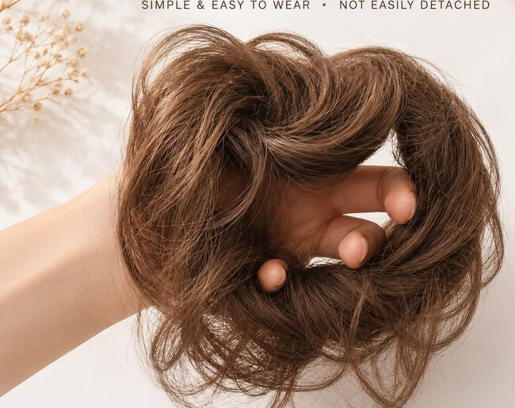
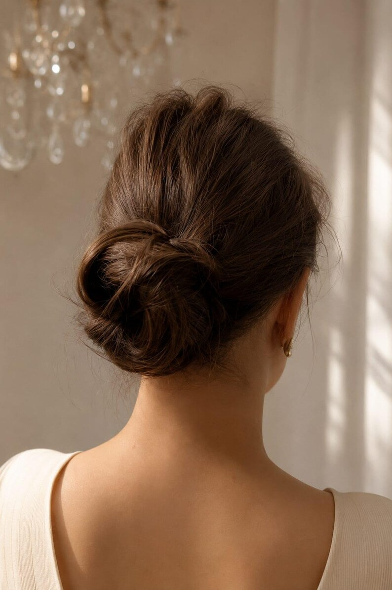
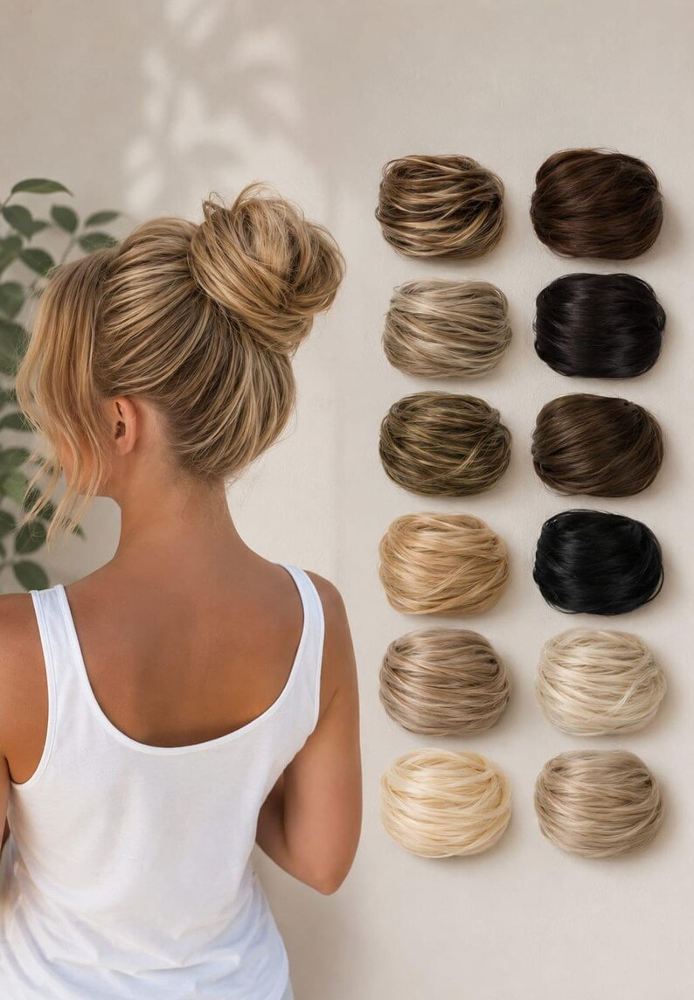

Elastic-band performance
Test band diameter, stretch, recovery, stitching, concealment and secure hold through repeated fitting cycles.




DS HAIR · Synthetic Wigs & Hairpieces
PRODUCT CODE · DS-HPC-SY-007
A compact synthetic hair bun scrunchie for professional buyers developing quick updo and chignon ranges. The supplied reference images show a smooth wrapped-bun appearance, an elastic-band attachment and 12 numbered source shades. For DS-HPC-SY-007, MOQ is 60 pcs/color, the unit-price range is US$0.98–1.50 and lead time is 3–21 days. Production diameter, fibre, finished weight, shade matching, heat protocol, packing and tolerances remain subject to sample approval and written specification.
Commercial terms and unconfirmed technical details are provided only after specification review.
BUILD YOUR BUYING BRIEF
These controls prepare an enquiry; they do not indicate live stock. Final feasibility, MOQ, price and lead time are confirmed in writing.
PRIMARY COLOUR SYSTEM
Screen colour is for initial selection only. Final shade approval should use a physical colour ring or confirmed sample. Where the source chart has no published shade code, Ref numbers are temporary website identifiers only.
REQUEST A PHYSICAL COLOUR KIT →BUYER ANSWER
A compact synthetic hair bun scrunchie for professional buyers developing quick updo and chignon ranges. The supplied reference images show a smooth wrapped-bun appearance, an elastic-band attachment and 12 numbered source shades. For DS-HPC-SY-007, MOQ is 60 pcs/color, the unit-price range is US$0.98–1.50 and lead time is 3–21 days. Production diameter, fibre, finished weight, shade matching, heat protocol, packing and tolerances remain subject to sample approval and written specification.
EVALUATION POINTS
Use a representative sample to turn visual impressions into an approved, repeatable product reference.
Test band diameter, stretch, recovery, stitching, concealment and secure hold through repeated fitting cycles.
Approve finished diameter, height, wrap direction, volume, flyaway limit and recovery after packing and wear.
Approve hand, shine, colour uniformity, tangling and the exact tested care protocol for the selected production fibre.
Treat the 12 supplied shades as source references only and approve production colours against physical samples or DS HAIR Colour Chart 2.
Check that the support form, net and retail pack preserve the bun silhouette without crushing or permanent deformation.
SIMILAR PRODUCT COMPARISON
These are separate development directions. Confirm the attachment and finished silhouette against an approved sample rather than treating the formats as interchangeable.
Scroll horizontally to compare methods →
| Buyer question | Hair Bun Scrunchie | Clip-In Chignon | Drawstring Ponytail | Elastic-Band Braiding Ponytail |
|---|---|---|---|---|
| Primary result | Compact smooth bun | Compact shaped updo | Longer textured volume | Integrated braid or updo length |
| Reference attachment | Elastic band / scrunchie | Contoured clip | Pocket base + drawstring | Elastic band + wrap section |
| Natural-hair integration | Wrapped around a secured bun or ponytail | Natural hair secured under updo | Natural ponytail enclosed in pocket | Braided together |
| Best brief detail | Band recovery, bun size and shape | Clip geometry and silhouette | Pocket size, cinch hold and curl | Braid pattern and band recovery |
These are separate development directions. Confirm the attachment and finished silhouette against an approved sample rather than treating the formats as interchangeable.
THE DS HAIR DIFFERENCE
We compare the way a project is managed—not make unverified statements about another supplier’s hair.
SPECIFICATION STATUS
DS HAIR does not publish assumptions as product specifications. Open items are confirmed against the selected supply batch and quotation.
OEM / PRIVATE LABEL
PROFESSIONAL PRODUCT KNOWLEDGE
Practical guidance for salons, distributors and private-label teams. Product-specific claims still require sample approval.
It is a compact removable synthetic hairpiece built around an elastic attachment and wrapped around a secured natural bun or ponytail to create a fuller updo.
Record band diameter, stretch, recovery, stitching, concealment and holding performance through repeated fitting cycles.
No. They are photographed source references. Approve production colours against physical samples or DS HAIR Colour Chart 2 before an order is confirmed.
For DS-HPC-SY-007, MOQ is 60 pcs/color, unit price is US$0.98–1.50/pc and lead time is 3–21 days. Final order total and delivery schedule still follow the written specification.
Retain an approved sample and written specification covering fibre, grams, finished diameter, band, wrap, colour, care wording, packaging and QC tolerances.
RELATED DEVELOPMENT DIRECTIONS
These are enquiry pathways, not live-stock listings. Each product requires its own specification and sample reference.

Compare the elastic-band bun with a compact updo built around a separate clip-in attachment.
DISCUSS THIS PRODUCT →
Compare a compact bun format with a longer coily pocket-base drawstring hairpiece.
DISCUSS THIS PRODUCT →
Compare a compact ready-made bun with a long elastic-band attachment designed for braid and updo development.
DISCUSS THIS PRODUCT →BUYER QUESTIONS
Yes. DS-HPC-SY-007 is presented as a B2B development reference with a 60 pcs/color MOQ, US$0.98–1.50 unit-price range and 3–21 day lead time. Final order details follow the approved written specification.
The supplied images show an elastic rubber-band / scrunchie attachment. Production band dimensions, material, recovery and stitching require sample approval.
The supplied source image displays 7 cm / 2.75 in as a reference. DS HAIR production diameter, installed silhouette and tolerances remain unconfirmed until sample approval.
The supplied set contains 12 numbered source-shade photographs, while DS HAIR Colour Chart 2 provides the standard buyer-matching reference. Final production shades require physical approval.
Colour matching and private-label presentation can be reviewed against physical references, artwork and quantity requirements. Available options and packing details require written confirmation.
REFERENCE · DS-HPC-SY-007
Send the target wearer, finished bun size, grams, elastic-band requirement, colour reference, fibre requirement, packaging brief and estimated quantity so DS HAIR can prepare the correct sample and quotation path.
SEND YOUR BUYING BRIEF